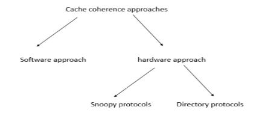

Explain in details Cache Coherency.
- A cache is a place to store something temporarily in a computing environment.It improves the performance of a system but it creates a problem know as cache coherence.
- Before the cache is copied into main memory ,if the two copies one in cache and other in main memory are different.
- This inconsistency in value of cache and main memory is called cache coherence problem.
- There are three distinct levels of cache coherence:
- Every write operation appears to occur instantaneously.
- All processes see exactly the same sequence of changes of values for each separate operand.
- Different processes may see an operand assume different sequences of values.
- Cache coherence approaches have generally been divided into software and hardware approaches. The classification of cache coherency protocols is shown

- Software Approaches:
Software cache coherence schemes attempt to avoid the need for additional hardware circuitry and logic by relying on the
compiler and operating system to deal with the problem. Software approaches are attractive because the overhead of detecting potential problems is
transferred from run time to compile time, and the design complexity is transferred from hardware to software.
- Hardware approaches:
Hardware-based solutions are generally referred to as cache coherence protocols. These solutions provide dynamic recognition at run time of potential inconsistency conditions.
Because the problem is only dealt with when it actually arises, there is more effective use of caches, leading to improved performance over a software approach
- Snoopy Protocols
- Directory Protocols